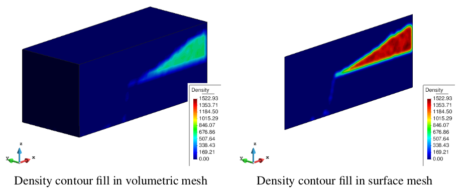
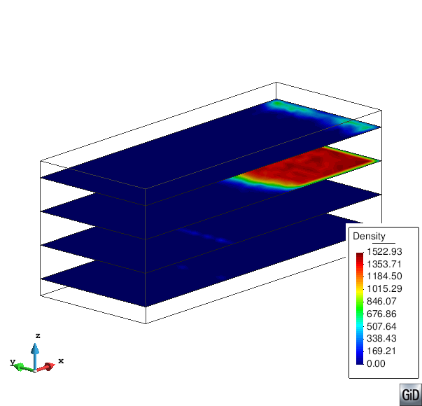
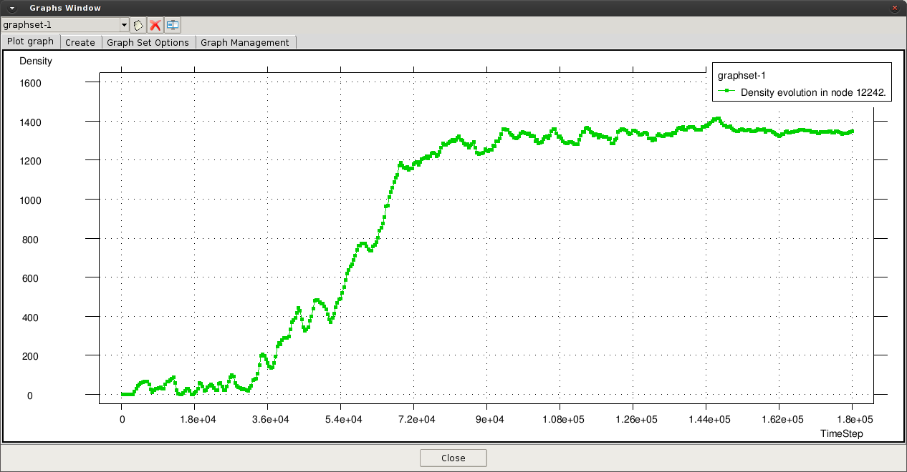

Visualizing averaged results
After the model is processed and the P4 output files are generated, the standard visualization capabilities of GiD can be used, together with a set of special tools and commands specific of P4 for the analysis of the results.
The output file can load the particles in the Load post-process file section of the toolbar (with GiD in post-process mode).
Ones the file is loaded, the different meshes used in the process will appear in the Display Style window.
To visualize the averaged results, the toolbar View Results Menu can be used (Menu > View results), or through the Results Window [].
Based in the same previous example of particle visualization, the figure below depicted the density projected over a 3D volumetric mesh (Tetrahedra) and a fine 3D surface mesh (triangles) as a slice (XZ) in the middle of the domain.

The interior of the volumetric mesh can be visualized through cut planes defined over different directions:
Menu > Do cuts > Cut plane > Succession.Define the cutting axis by two points. Enter first point: (0.0 -0.2 0.0), and second point: (0.0 0.2 0.0).
Enter the number of cut surfaces along the defined line: 4. Each cut surface will appear as a different layer in Display Style window, and can be visualized deactivating the volume mesh ().

Activating again the volumetric mesh and deactivating the cuts, it is possible generate new cuts in a different direction
Selecting a new set of successions in direction Z. First point: (0.0 0.0 -0.2), second point: (0.0 0.0 0.2), and 4 cut surfaces.

Graphs
To analyze the results in the mesh, graphs can be generated for the temporal evolution of a variable in a defined point or the spatial distribution of a certain variable. The generation of a graph with the temporal evolution of a variable in a predefined point can be performed by:
Menu > View results > Graphs > Point evolution > Variable (density).Enter the coordinates of the point: (0.3 0.0 0.05). More points can be entered or ESC to finish.

In a similar way, the spatial distribution of a variable in a defined direction can be plotted:
Set the spatial direction in X axis:
Menu > View results > Graphs > Line graph > Set X axis > Z variation.Set the variable to plot:
Menu > View results > Graphs > Line graph > Variable (density).Enter the initial point of the plot: (0.3 0.0 -0.2), and the second point: (0.3 0.0 0.2). More points can be entered or ESC to finish

The graphs can be modified using the options in the Graph window, or can be used a more specialized software (like MS Excel or Matlab),
exporting the graphs as 2 columns ascii files: Menu > File > Export > Graph and select the graph to export, or export all the graphs in the screen.
NOTE:
- Explain something about the Integral 1D or 2D visualization...
Pressure/drag force in surfaces
When the user define physical surfaces (geometries), the pressure and drag forces over those surfaces will be calculated during the precessing.
For the previous example, if the condition is applied for the surface in the middle of the domain (the conveyor), the drag forces and pressure will appear in the results menu. In the figure below, the resultant drag force in X and Z directions are depicted.

Integrals
The calculation of the integrals in a direction (1D) or a plane (2D) can be specially useful in certain situations, like the calculation of mass or volumetric flow rate. Other case in which the integral can be used is the calculation of the average values in a certain direction when the results should be uniformlly distributed. For this, the averaged results can be projected over a surface, decreasing the amount of information required.
With the previous example, the average density over the Y direction is calculated following as:
Activate the integral in Axis-Y. In the P4 Options: Spatial_Integral = 1D, and Integral_direction = Y.
In Output options: Scale Results = yes and Scale Value = 1/L (L is the length in Y direction).
Generate a geometry (surface) over the plane XZ, considering the dimensions of the domain (the position of the surface in the Y direction is not relevant and any value can be used).
The results of the simulation now can be defined as <ρ>_y, as presented in the figure